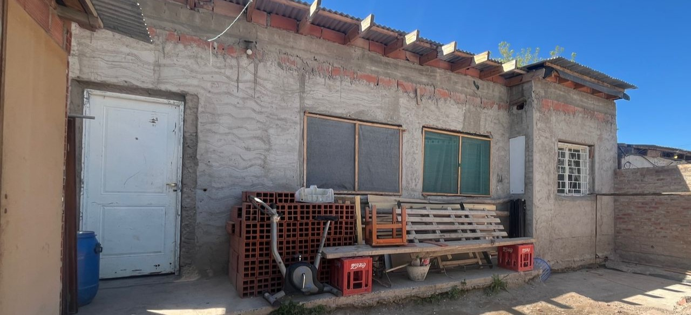
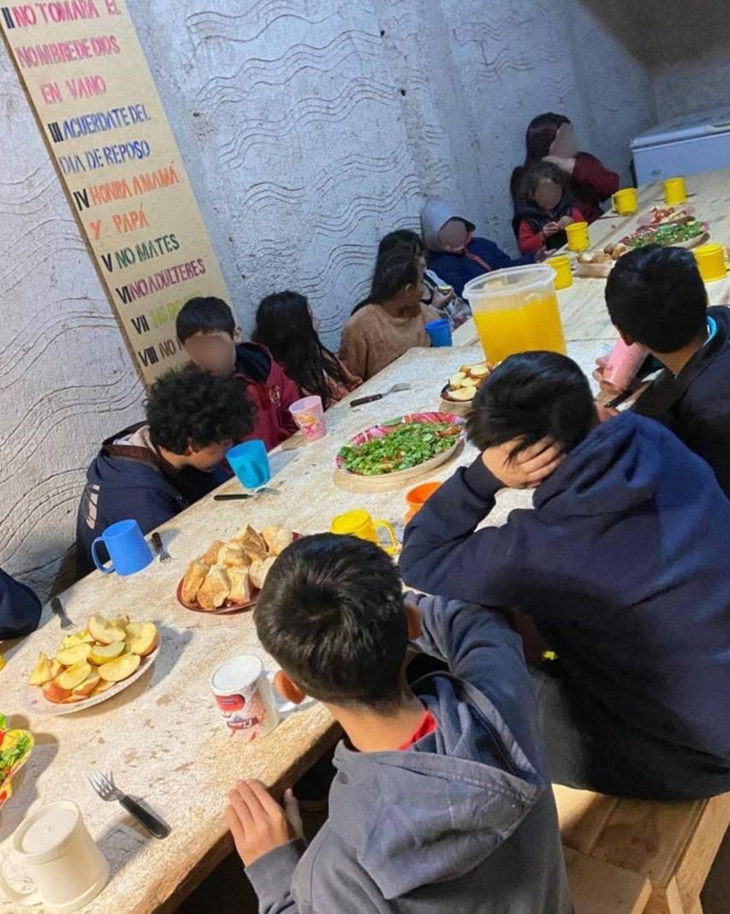
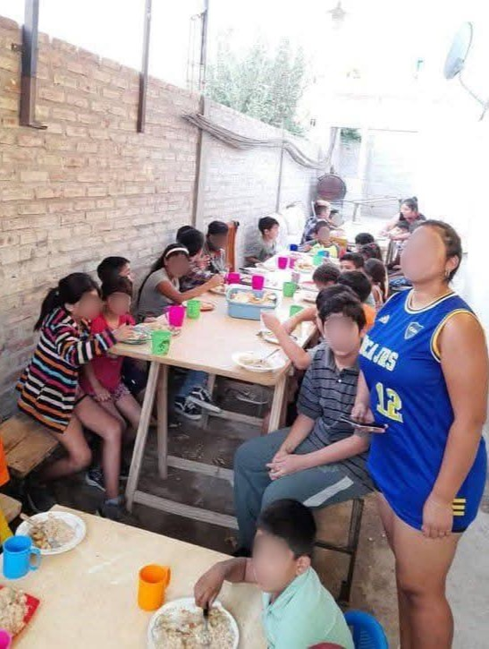
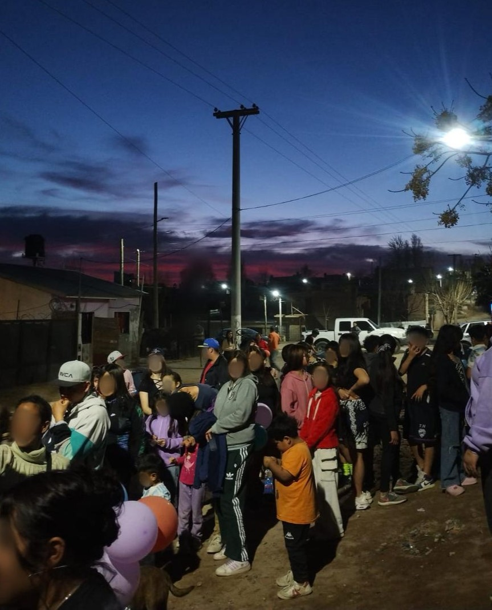
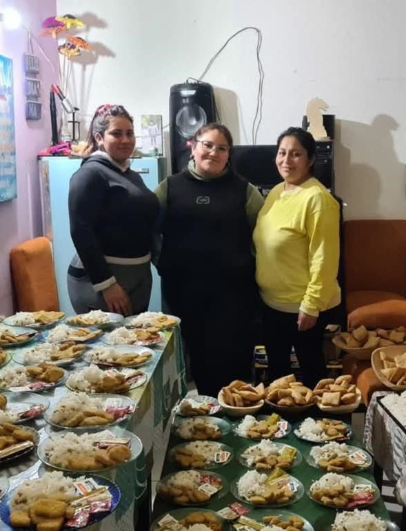

Milagros y su mamá Karina
Facebook: Karina Comedor
Alias: comedor.15.nx


“Este comedor funciona desde hace 15 años, ofreciendo comida y merienda diaria a niños, abuelos y familias del barrio. Comenzaron con 5 niños y con el tiempo se fueron sumando más familias. Atienden alrededor de 150 niños y unas 170 familias los lunes, martes y jueves, entregando casi 200 viandas. Los viernes van al Mercado Concentrador a buscar donaciones de verduras, carne, pollo y otros alimentos; lo que sobra lo reparten a iglesias, otros comedores y algunas familias.”

